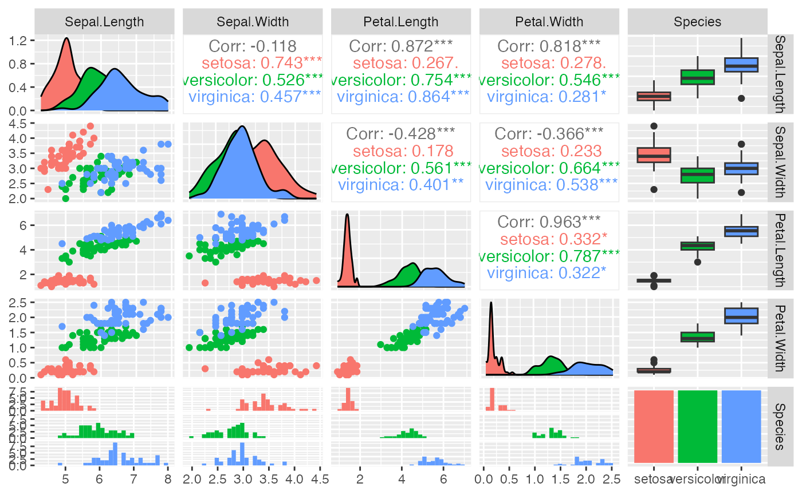

Module 3 Constructing Workflow
2023-03-30
Module3.RmdQuick Recap
Last workshop:
The
help()function in R and viewing documentationR thousands of packages and online resources
Exploration of Rstudio and Rmarkdown
-
()means passing the desired function to the arguments- eg.
list(x)is passing the list function to the argument \(x\)
- eg.
Basic Operations (Addition, Subtraction, Multiplication, Division, Modulus, Integer Division)
Relation Operations (<, >, <=, >=, ==, !=)
-
Basic Data Types:
- numeric: 1, 12, 5.6, 7.8
- Integer: 1L, 12L, 50L
- character: “Omics”, “Intro”, “R Workshop”, “!”
-
logical:
TRUE,FALSE,T,F - factor: Convert fixed and known set of possible values to categorical variables
-
Variable assignment using
<-or=- eg. variable_name <- assign_value
-
Basic Data Structure:
Dimensions Homogeneous
(contents must be same type)Heterogeneous
(contents can be of different types)1 dimension Atomic vector List 2 dimensions Matrix Data frame, (tibble) n dimensions Array
Subsetting
For a given R data object that contains multiple values or multiple variables, many of the times we would want to investigate only a subset of data. We can use the indexing features in R that can be used to select and exclude variables and observations.
One of the easiest way is to use the [ ] indexing
features, and sometimes [[ ]]. The index can either be the
index value for the values interested, or the names of the columns or
the rows. Notice that the index starts with 1 in R. For instance,
# atomic vector and list
letter_avec <- c("a", "a", "b", "c", "b")
letter_avec[1] ## first value in the atomic vector
#> [1] "a"
letter_avec[2:5] ## second to fifth value in the atomic vector
#> [1] "a" "b" "c" "b"
letter_avec[-3] ## exclude the third values in the atomic vector
#> [1] "a" "a" "c" "b"Try with matrices or other data types yourself!
Data frame
In the case of data frame, we can use the same subset method as above but in a slightly different way,
df_1 <- data.frame(x = 1:3, y = c("a", "b", "c"))
# subset using index value
df_1[1]
#> x
#> 1 1
#> 2 2
#> 3 3
# subset using column name
df_1["x"]
#> x
#> 1 1
#> 2 2
#> 3 3If we only want the the values in a column of the dataframe, let’s
say we only want the value of y in df_1,
df_1[["y"]] # or df_1[[2]]
#> [1] "a" "b" "c"We can obtain the same results using $, which is a very
convenient way to subset a column of data frame in R. The difference
between using [ ] , [[ ]], and $
is that subset using [ ] returns a data frame, while
[[ ]], $ returns a atomic like vector.
df_1$y
#> [1] "a" "b" "c"Or, if we only want the second value of y in
df_1,
df_1[[2]][2]
#> [1] "b"
val <- df_1$y
val[2]
#> [1] "b"On the other hand, we can also subset the dataframe by rows or by any rows and columns. The dimension of a dataframe is in the form of rows by columns, thus, we can subset the rows using row index [row_index, ].
# subset by rows
df_1[1, ]
#> x y
#> 1 1 aWe can also subset by desired row indies and column indies,
# create a 3D dataframe
df_3d <- data.frame(x = 1:5, y = 6:10, z = 11:15) # dim: 5*3
# find dimension of dataframe
dim(df_3d)
#> [1] 5 3
# subset row 2 to 5 in column 2 and 3
df_3d[2:5, 2:3]
#> y z
#> 2 7 12
#> 3 8 13
#> 4 9 14
#> 5 10 15Construct a workflow
Setting up working directory
The working directory is the default location where R will look for files we want to load and where it will put any files you save. The initial (default) working directory will be where we save our RMarkdown files or R scipt files.
We can check where is the current working directory for this RMarkdown,
getwd()
#> [1] "/Users/henzhwang/Desktop/OmicsRWorkshop/vignettes"This indicates that R will only recognize and read the files that are
store in Desktop (files that has the same working directory), but cannot
recognized any files that are not in this directory. The best way is to
store our RMarkdown file within the working directory of data you want
to import or save. If that’s not the case, we can set the working
directory to the deisred files locations using setwd().
setwd("/Users/henzhwang/Desktop/OmicsRWorkshop")Reading csv files
In many cases, we want to perform data analysis on the external data
in different format. We want to focus on reading csv file, where we can
use base::read.csv() to read any csv file into R.
csv_file <- read.csv("<path/file name>" , header = TRUE)
# csv_file <- readr::read_csv()If the file is not in your current working directory, we can also exectute the following,
csv_file <- read.csv("<path/file name>")Data Exploration
We now want to perform the basic operations to a dataset in R. We
want to first try with performing the opertations to the World’s famous,
build-in dataset iris in R.
We can assign the build-in dataset to a variable, and inspect the
dataset (you do not have to assign to a variable as it exists in the
gloabl environment, but easier to manipulate after assignment). The
information of the iris dataset can be viewed by
??iris.
Iris <- readr::read_builtin("iris")
#Iris <- iris
head(Iris)
#> Sepal.Length Sepal.Width Petal.Length Petal.Width Species
#> 1 5.1 3.5 1.4 0.2 setosa
#> 2 4.9 3.0 1.4 0.2 setosa
#> 3 4.7 3.2 1.3 0.2 setosa
#> 4 4.6 3.1 1.5 0.2 setosa
#> 5 5.0 3.6 1.4 0.2 setosa
#> 6 5.4 3.9 1.7 0.4 setosaIf the dataset is larger, or if we are interest in the data that at
the two ends, we can use the head() and tail()
command in R. The number 5 indicates the number of rows
will display, default is 6.
head(Iris, 5)
#> Sepal.Length Sepal.Width Petal.Length Petal.Width Species
#> 1 5.1 3.5 1.4 0.2 setosa
#> 2 4.9 3.0 1.4 0.2 setosa
#> 3 4.7 3.2 1.3 0.2 setosa
#> 4 4.6 3.1 1.5 0.2 setosa
#> 5 5.0 3.6 1.4 0.2 setosa
tail(Iris, 5)
#> Sepal.Length Sepal.Width Petal.Length Petal.Width Species
#> 146 6.7 3.0 5.2 2.3 virginica
#> 147 6.3 2.5 5.0 1.9 virginica
#> 148 6.5 3.0 5.2 2.0 virginica
#> 149 6.2 3.4 5.4 2.3 virginica
#> 150 5.9 3.0 5.1 1.8 virginicaDescriptive Analysis
The next step is always good be inspect any what are the data types
for each features in the dataset, and we can use str(). We
notice that Sepal.length, Sepal.Width,
Petal.Length, Petal.Width are numeric values,
while Species is a factor column.
str(Iris)
#> 'data.frame': 150 obs. of 5 variables:
#> $ Sepal.Length: num 5.1 4.9 4.7 4.6 5 5.4 4.6 5 4.4 4.9 ...
#> $ Sepal.Width : num 3.5 3 3.2 3.1 3.6 3.9 3.4 3.4 2.9 3.1 ...
#> $ Petal.Length: num 1.4 1.4 1.3 1.5 1.4 1.7 1.4 1.5 1.4 1.5 ...
#> $ Petal.Width : num 0.2 0.2 0.2 0.2 0.2 0.4 0.3 0.2 0.2 0.1 ...
#> $ Species : Factor w/ 3 levels "setosa","versicolor",..: 1 1 1 1 1 1 1 1 1 1 ...We can also inspect the number of species in each factor level,
table(Iris$Species)
#>
#> setosa versicolor virginica
#> 50 50 50We might also be interested in the the range of the an variable.
sepal_length <- Iris$Sepal.Length
min(sepal_length) ## minimum value
#> [1] 4.3
max(sepal_length) ## maximum value
#> [1] 7.9
range(sepal_length) ## vector contains min and max values
#> [1] 4.3 7.9
# range of the variable
range(sepal_length)[2] - range(sepal_length)[1]
#> [1] 3.6However, these three functions are limited to the data types of the applied variable. For instance,
min(Iris$Species)
#> Error in Summary.factor(structure(c(1L, 1L, 1L, 1L, 1L, 1L, 1L, 1L, 1L, : 'min' not meaningful for factors
range(Iris$Species)
#> Error in Summary.factor(structure(c(1L, 1L, 1L, 1L, 1L, 1L, 1L, 1L, 1L, : 'range' not meaningful for factorsWhen we encounter errors, don’t panic if the error message does not make sense. One of the useful way is copy the whole error message and search on Google, or make use of ChatGPT (Be careful that sometimes ChatGPT does not make sense!)
For convenience, we can use a single command summary()
to compute the descriptive statistics of the dataset
summary(Iris)
#> Sepal.Length Sepal.Width Petal.Length Petal.Width
#> Min. :4.300 Min. :2.000 Min. :1.000 Min. :0.100
#> 1st Qu.:5.100 1st Qu.:2.800 1st Qu.:1.600 1st Qu.:0.300
#> Median :5.800 Median :3.000 Median :4.350 Median :1.300
#> Mean :5.843 Mean :3.057 Mean :3.758 Mean :1.199
#> 3rd Qu.:6.400 3rd Qu.:3.300 3rd Qu.:5.100 3rd Qu.:1.800
#> Max. :7.900 Max. :4.400 Max. :6.900 Max. :2.500
#> Species
#> setosa :50
#> versicolor:50
#> virginica :50
#>
#>
#> We can also summary the dataset by species using
by(),
by(data = Iris, INDICES = Iris$Species, FUN = summary)
#> Iris$Species: setosa
#> Sepal.Length Sepal.Width Petal.Length Petal.Width
#> Min. :4.300 Min. :2.300 Min. :1.000 Min. :0.100
#> 1st Qu.:4.800 1st Qu.:3.200 1st Qu.:1.400 1st Qu.:0.200
#> Median :5.000 Median :3.400 Median :1.500 Median :0.200
#> Mean :5.006 Mean :3.428 Mean :1.462 Mean :0.246
#> 3rd Qu.:5.200 3rd Qu.:3.675 3rd Qu.:1.575 3rd Qu.:0.300
#> Max. :5.800 Max. :4.400 Max. :1.900 Max. :0.600
#> Species
#> setosa :50
#> versicolor: 0
#> virginica : 0
#>
#>
#>
#> ------------------------------------------------------------
#> Iris$Species: versicolor
#> Sepal.Length Sepal.Width Petal.Length Petal.Width Species
#> Min. :4.900 Min. :2.000 Min. :3.00 Min. :1.000 setosa : 0
#> 1st Qu.:5.600 1st Qu.:2.525 1st Qu.:4.00 1st Qu.:1.200 versicolor:50
#> Median :5.900 Median :2.800 Median :4.35 Median :1.300 virginica : 0
#> Mean :5.936 Mean :2.770 Mean :4.26 Mean :1.326
#> 3rd Qu.:6.300 3rd Qu.:3.000 3rd Qu.:4.60 3rd Qu.:1.500
#> Max. :7.000 Max. :3.400 Max. :5.10 Max. :1.800
#> ------------------------------------------------------------
#> Iris$Species: virginica
#> Sepal.Length Sepal.Width Petal.Length Petal.Width
#> Min. :4.900 Min. :2.200 Min. :4.500 Min. :1.400
#> 1st Qu.:6.225 1st Qu.:2.800 1st Qu.:5.100 1st Qu.:1.800
#> Median :6.500 Median :3.000 Median :5.550 Median :2.000
#> Mean :6.588 Mean :2.974 Mean :5.552 Mean :2.026
#> 3rd Qu.:6.900 3rd Qu.:3.175 3rd Qu.:5.875 3rd Qu.:2.300
#> Max. :7.900 Max. :3.800 Max. :6.900 Max. :2.500
#> Species
#> setosa : 0
#> versicolor: 0
#> virginica :50
#>
#>
#> Data distribution
When examining the distribution of a quantitative variable, we should describe the overall pattern of the data (shape, center, spread), and any deviations from the pattern (outliers). Here are some useful metrics to determine the overall pattern:
- Mean: Average value of a quantitative variable
- Median: The middle number of a ordered quantitative variable
- Mode: The most frequent number of a quantitative variable
- Standard Deviation: Measure of how dispersed the data is in relation to the mean
- Variance: Measure of dispersion that takes into account the spread of all data points in a data set
We can easily compute these metrics in R,
mean(sepal_length) #mean
#> [1] 5.843333
sd(sepal_length) #standard deviation
#> [1] 0.8280661
var(sepal_length) #variance
#> [1] 0.6856935We can also visualize the data distribution of the
Sepal.Length of the iris dataset using
histogram, where histogram is an approximate representation of the
distribution of numerical data.
We can also visualize the Sepal.Length variable by
species using dot plot. A dot plot uses observations as points, and help
to visualize the shape and the spread of the data, and comparing the
frequency distributions. We want to use ggplot2,
library(ggplot2)
# dot plots using ggplot2
ggplot(Iris) +
aes(x = Species, y = Sepal.Length) +
geom_dotplot(binaxis = "y", stackdir = "center")Another useful plot is scatter plot. A scatter plot allow to check
whether there is a potential link between two quantitative variables,
and useful in visualizing a potential correlation between variables. We
want to investigate the correlation between Petal.Length
and Petal.Width, and thus we draw,
# create scatter plot with base plot
plot(Iris$Petal.Length, Iris$Petal.Width, type = "p")We can also investigate if the correlation between
Petal.Length and Petal.Width is different in
each species, we use ggplot2,
ggplot(Iris) +
aes(x = Petal.Length, y = Petal.Width, colour = Species) +
geom_point()Scaling
Scaling is a mathematical process used to transform numerical values to a common scale. This allows for a fair comparison of variables that have different units or ranges of values, where it involves changing the size of the shape while maintaining its proportions.
It is important to note that some mathematical and statistical algorithms, such as Principal Components Analysis (PCA), are sensitive to the scale of the dataset. In such cases, it is necessary to scale the dataset before applying the algorithm to ensure that the results are not biased towards variables with larger ranges of values. Failure to scale the dataset can result in inaccurate or misleading results, making scaling an essential step in data analysis.
# perform scaling
Iris_scaled <- Iris
Iris_scaled[1:4] <- scale(Iris[1:4])
head(Iris_scaled[1:4])
#> Sepal.Length Sepal.Width Petal.Length Petal.Width
#> 1 -0.8976739 1.01560199 -1.335752 -1.311052
#> 2 -1.1392005 -0.13153881 -1.335752 -1.311052
#> 3 -1.3807271 0.32731751 -1.392399 -1.311052
#> 4 -1.5014904 0.09788935 -1.279104 -1.311052
#> 5 -1.0184372 1.24503015 -1.335752 -1.311052
#> 6 -0.5353840 1.93331463 -1.165809 -1.048667
# summary statistic
summary(Iris_scaled)
#> Sepal.Length Sepal.Width Petal.Length Petal.Width
#> Min. :-1.86378 Min. :-2.4258 Min. :-1.5623 Min. :-1.4422
#> 1st Qu.:-0.89767 1st Qu.:-0.5904 1st Qu.:-1.2225 1st Qu.:-1.1799
#> Median :-0.05233 Median :-0.1315 Median : 0.3354 Median : 0.1321
#> Mean : 0.00000 Mean : 0.0000 Mean : 0.0000 Mean : 0.0000
#> 3rd Qu.: 0.67225 3rd Qu.: 0.5567 3rd Qu.: 0.7602 3rd Qu.: 0.7880
#> Max. : 2.48370 Max. : 3.0805 Max. : 1.7799 Max. : 1.7064
#> Species
#> setosa :50
#> versicolor:50
#> virginica :50
#>
#>
#> Correlation analysis
Correlation is a statistical measure that describes the strength and direction of a relationship between two variables. It is usually measured using a correlation coefficient which is a numerical value that ranges from -1 to 1, indicating whether two variables are positively related (i.e., they tend to increase or decrease together), negatively related (i.e., they tend to move in opposite directions), or not related at all.
- A coefficient of 1 indicates a perfect positive correlation, where both variables increase or decrease together
- A coefficient of -1 indicates a perfect negative correlation, where one variable increases as the other decreases
- A coefficient of 0 indicates no correlation, meaning there is no linear relationship between the two variables
cor(Iris[1:4])
#> Sepal.Length Sepal.Width Petal.Length Petal.Width
#> Sepal.Length 1.0000000 -0.1175698 0.8717538 0.8179411
#> Sepal.Width -0.1175698 1.0000000 -0.4284401 -0.3661259
#> Petal.Length 0.8717538 -0.4284401 1.0000000 0.9628654
#> Petal.Width 0.8179411 -0.3661259 0.9628654 1.0000000We can also make a matrix of plots with a given dataset using
ggpairs in GGally package that allow us
quickly visualize relationships between multiple variables in a single
plot.

Create new columns
When performing data manipulation, it is often necessary to store the
manipulation results in the original dataset for future analysis or to
avoid creating a new object. One way to achieve this is by creating a
new column in the data frame and assigning the manipulated values to
that column. Similar to subsetting, this can be done using
$ operator in R.
Consider if the sepal length of a flower is longer and equal to 5.843
(the mean value of sepal length in the iris dataset) as
“long”, and “short” otherwise. We want to create a new column in the
Iris dataset to store the information on whether a flower
has a “long” or “short” sepal length.
Write data
After manipulating the data, we can use save() to save
the manipulated dataset locally. It will save automatically to the
current working directory, unless specified.
Iris_modi <- Iris[56:78, ]
save(Iris_modi, file = "Iris_modi.csv")
save(Iris_modi, file = "/Users/henzhwang/Desktop/Iris_modi.csv")